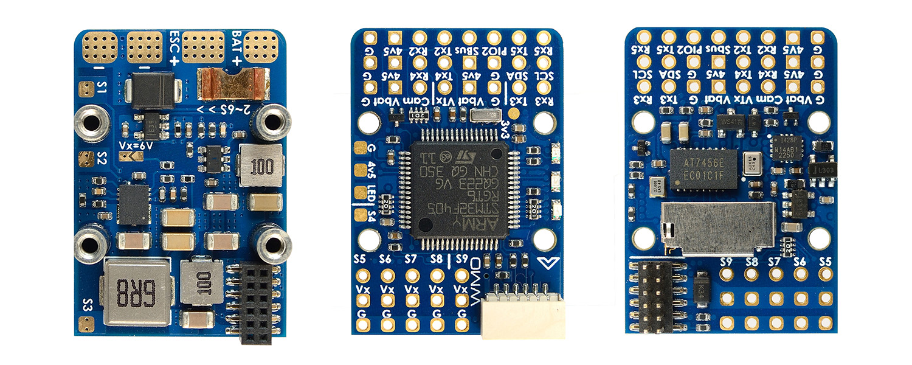

Lower board comparison
Top-down component faces · same scale
Our FC LowerPower
31.5 × 48 mm PCB
Current CAD geometry · green PCB · orthographic rendering
Matek F405-WMO Lower board
22 × 32 mm PCB

Manufacturer photograph · scaled to the nominal PCB outline
One scale for both boards. Each 10 mm ruler interval has the same screen width. Connector overhang is outside the stated PCB dimensions.
Sources and scale accuracy
Our board uses the same current geometry and pad artwork as the Board viewer. This is a placement study; electrical routing and hardware qualification remain unfinished.
Matek image: original manufacturer photograph, with dimensions from Matek’s 22 × 32 mm drawing. The original image file is unchanged. A clipped region is scaled to the nominal board width and length; a small aspect correction aligns the photograph’s PCB edges. Lens effects, elevated components and the photographed hardware remain approximate. This comparison is not a dimensional inspection.